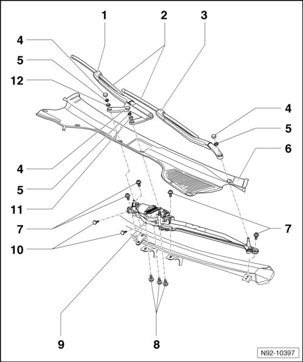

Windshield Wiper System Assembly Overview
Windshield Wiper System Assembly Overview

1 Wiper arm, passenger side
• Removing and installing --> [ Passenger Side Wiper Arm, Removing ] Windshield Wiper System
2 Aero windshield wipers
• Removing and installing --> [ Aero Windshield Wiper Blades ] Aero Windshield Wiper Blades
• Adjusting park position --> [ Windshield Wiper Blades, Adjusting Park Position ] Windshield Wiper Blades, Adjusting Park Position
3 Driver's side wiper arm
• Removing and installing --> [ Driver Side Wiper Arm, Removing ] Windshield Wiper System
4 Cap
5 Wiper arm nut on wiper arm shaft
• Driver wiper arm: 32 Nm
• Passenger wiper arm: 32 Nm
• Passenger wiper arm axle: 15 Nm
6 Plenum chamber cover
7 Bolts for wiper frame with linkage to body
• 10 Nm
8 Wiper motor to wiper frame bolts
• 7 Nm
9 Windshield wiper motor (V) with linkage
• Unit with wiper motor control module (J400)
• Windshield Wiper Motor with Wiper Frame, Removing and Installing --> [ Wiper Frame with Linkage and Windshield Wiper Motor, Removing ] Windshield Wiper System
• Windshield Wiper Motor, Removing from Wiper Frame --> [ Windshield Wiper Motor, Removing from Wiper Frame ] Windshield Wiper System
• Wiper Frame with Linkage, through 22.07, Removing and Installing --> [ Wiper Frame with Linkage, through 22.07 ] Windshield Wiper System
• Crank nut to wiper motor shaft: 20 Nm
• Windshield Wiper Control Module (J400), Coding --> [ Wiper Motor Control Module, Coding ] Testing and Inspection
10 Wiper motor bolts to bulkhead plenum chamber
• 7 Nm
11 Cone
• Installed in wiper arm
12 Washer